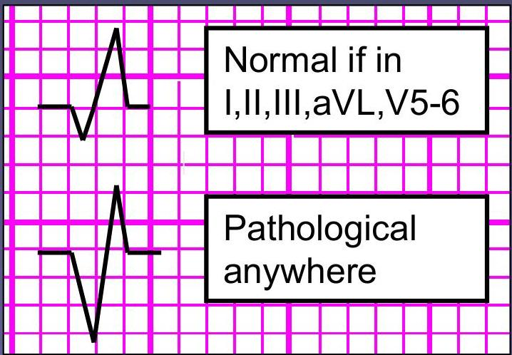
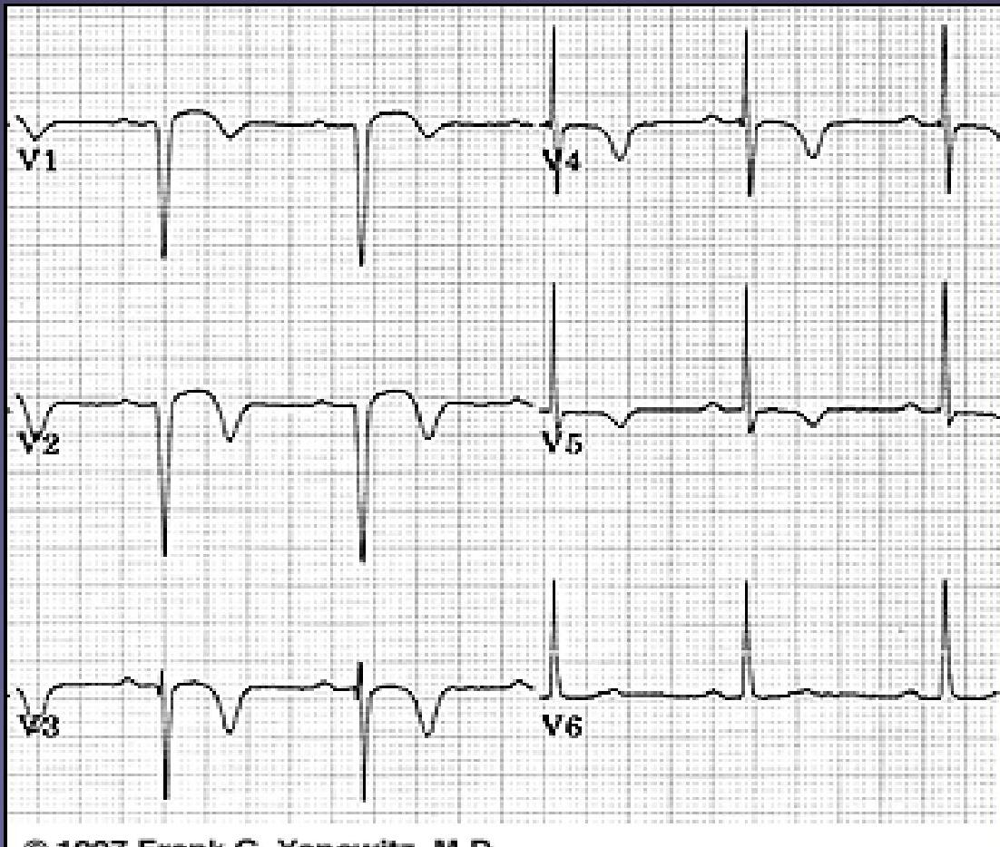
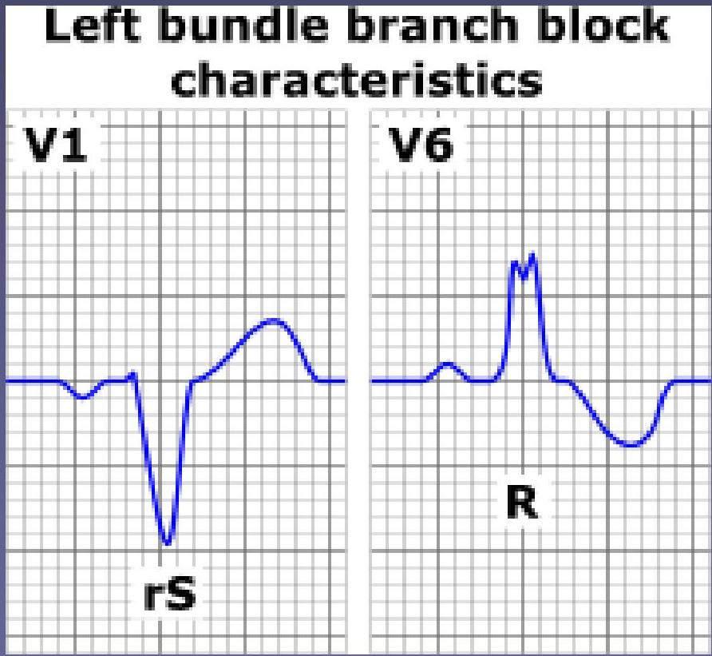
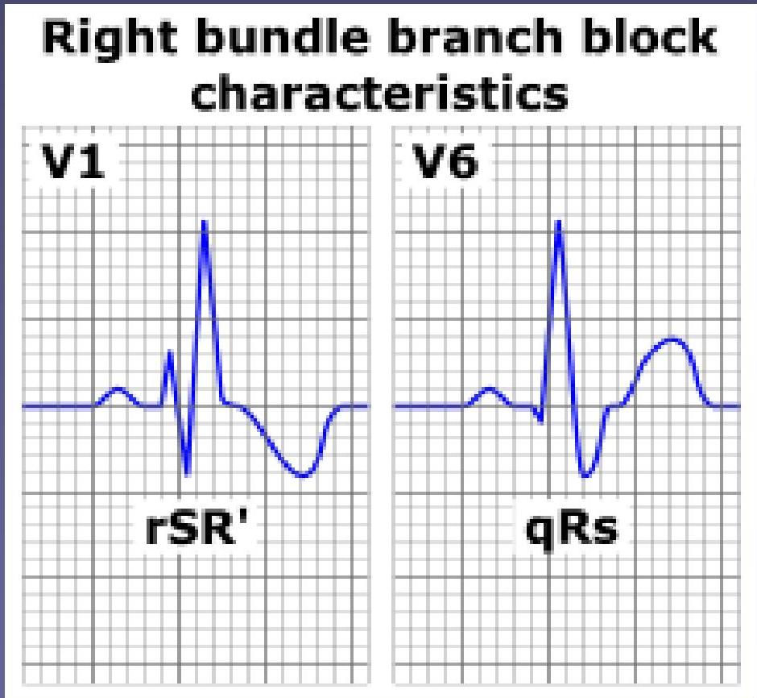

📉
Topic 07
The QRS Complex
01
The Q Wave
Are there any pathological Q waves?
Pathological Q Wave Criteria
A Q wave can be pathological if it is:
- Deeper than 2 small squares (0.2mV) and/or
- Wider than 1 small square (0.04s) and/or
- In a lead other than III or one of the leads that look at the heart from the left (I, II, aVL, V5 and V6) where small Qs (i.e. not meeting the criteria above) can be normal


02
The QRS Height
- If the complexes in the chest leads look very tall, consider left ventricular hypertrophy (LVH)
LVH Criteria
If the depth of the S wave in V1 added to the height of the R wave in V6 comes to more than 35mm, LVH is present.
S_{V1} + R_{V6} > 35\text{mm}
03
QRS Width & Conduction Blocks
- The width of the QRS complex should be less than 0.12 seconds (3 small squares)
- Some texts say less than 0.10 seconds (2.5 small squares)
- If the QRS is wider than this, it suggests a ventricular conduction problem – usually right or left bundle branch block (RBBB or LBBB)
Bundle branch block is caused either by infarction or fibrosis (related to the ageing process).
LBBB (Left Bundle Branch Block)
- If left bundle branch block is present, the QRS complex may look like a ‘W’ in V1 and/or an ‘M’ shape in V6.
- Clinical Alert: New onset LBBB with chest pain consider Myocardial infarction
- Important: Not possible to interpret the ST segment.

RBBB (Right Bundle Branch Block)
- It is also called RSR pattern
- If right bundle branch block is present, there may be an ‘M’ in V1 and/or a ‘W’ in V6.
- Can occur in healthy people with normal QRS width – partial RBBB

Use leads V1 and V6.
WiLLaM
LBBB: W in V1, M in V6
MaRRoW
RBBB: M in V1, W in V6
Knowledge Check
Test Your Understanding
Check your knowledge of Q waves, LVH calculations, and Bundle Branch Block patterns.
Loading quiz...